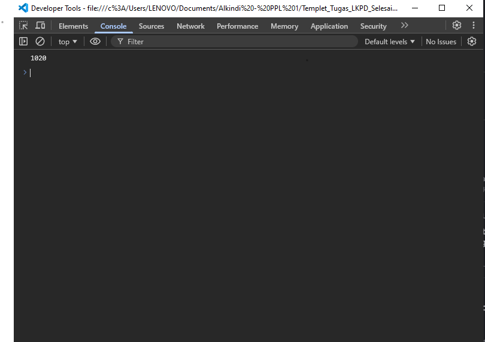
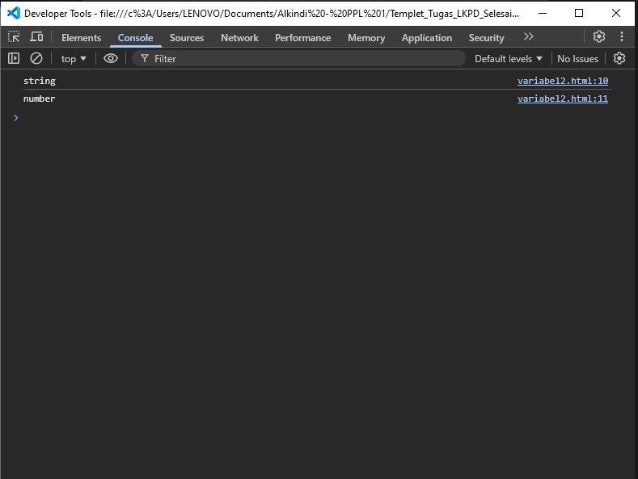
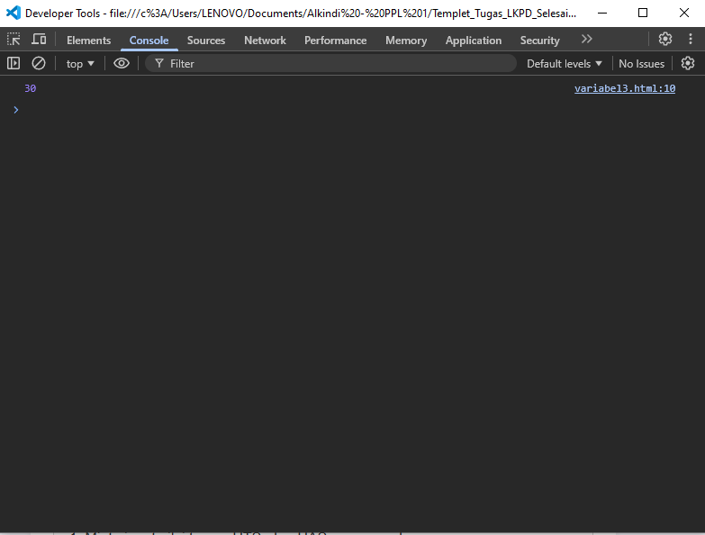
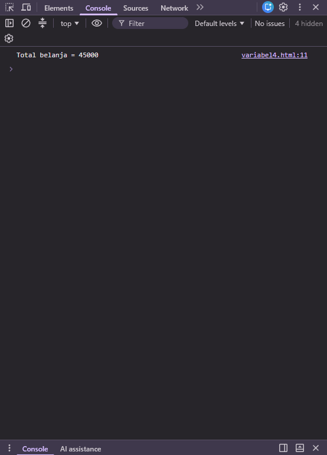
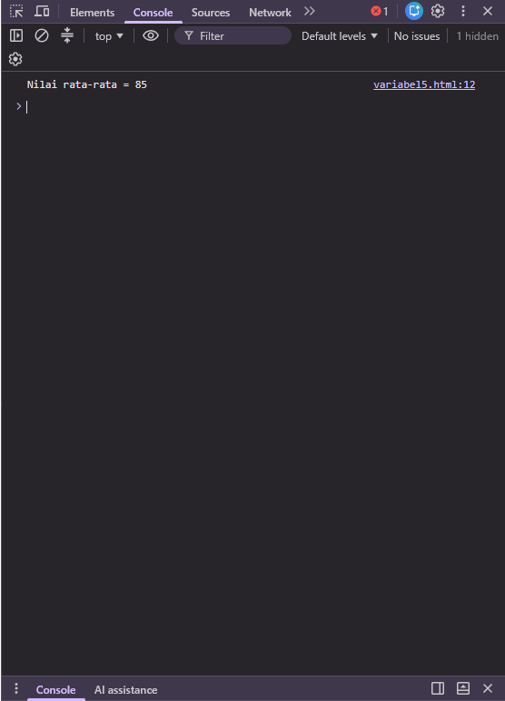

Satuan Pendidikan: SMKN 1 GARUT
Mata Pelajaran: Dasar-Dasar Pengembangan Perangkat Lunak dan Gim
Kelas/Fase: X / Fase E
Alokasi Waktu: 2 × 45
menit
prompt() menghasilkan String; menggunakan Number() dan String(); menganalisis kesalahan
akibat tipe data; serta membuat program input dan perhitungan sederhana.
lkpd_string_number_nama.js.Jangan jalankan terlebih dahulu. Prediksikan hasil:
let a = "10";
let b = "20";
console.log(a + b);| Pertanyaan | Jawaban |
|---|---|
| Apa output program? | "1020" |
| Mengapa hasil tersebut terjadi? | Karena a dan b adalah String, operator + menggabungkan teks. |
| Apakah a dan b bertipe Number? | Tidak, keduanya bertipe String. |
Uji sekarang. Apakah prediksimu benar? Jelaskan.
Ya. Outputnya adalah 1020 karena kedua nilai berupa String sehingga digabungkan, bukan dijumlahkan secara aritmetika.
let nama = "Asep";
let umur = 16;
console.log(typeof nama);
console.log(typeof umur);| Variabel | Prediksi | Hasil typeof | Kesimpulan |
|---|---|---|---|
| nama | String | string | Menyimpan teks. |
| umur | Number | number | Menyimpan angka. |
Temuan: String digunakan untuk teks dan ditulis di antara tanda kutip. Number digunakan untuk nilai angka yang dapat dihitung dan tidak memerlukan tanda kutip.
Perbaiki program agar menghasilkan 30. Gunakan Number():
let a = "10";
let b = "20";
let hasil = Number(a) + Number(b);
console.log(hasil);Hasil program: 30
Program meminta harga dan jumlah barang, mengonversi input menjadi Number, lalu menghitung total.
let harga = Number(prompt("Masukkan harga: "));
let jumlah = Number(prompt("Masukkan jumlah: "));
let total = harga * jumlah;
console.log("Total belanja = " + total);| Input uji | Nilai |
|---|---|
| Harga | Rp 15000 |
| Jumlah | 3 |
| Total seharusnya | Rp 45000 |
| Total program | Rp 45000 |
Untuk pengujian, masukkan harga 15000 dan jumlah 3.
Algoritma saya:
prompt().Number().console.log().let tugas = Number(prompt("Nilai tugas: "));
let uts = Number(prompt("Nilai UTS: "));
let uas = Number(prompt("Nilai UAS: "));
let rataRata = (tugas + uts + uas) / 3;
console.log("Nilai rata-rata = " + rataRata);Contoh uji: tugas 80, UTS 85, dan UAS 90 menghasilkan rata-rata 85.
| Pertanyaan | Jawaban |
|---|---|
| Mengapa prompt() perlu dikonversi jika hasilnya ingin dihitung? | Karena prompt() menghasilkan String, sehingga perlu Number() agar dihitung sebagai angka. |
| Apa perbedaan "10" dengan 10? | "10" adalah String, sedangkan 10 adalah Number. |
| Apa yang terjadi jika lupa Number()? | Operator + bisa menggabungkan teks; perhitungan dapat menghasilkan output yang tidak diharapkan. |
Pair: Bandingkan jawaban dengan teman. Jawaban bisa berbeda karena pemahaman atau contoh yang digunakan berbeda, lalu cocokkan dengan hasil eksperimen.
Share: Temuan penting: prompt() menghasilkan String sehingga input angka perlu dikonversi dengan Number() sebelum dihitung.
3 hal yang saya pahami:
2 hal yang masih membingungkan:
1 hal yang ingin saya coba pada program berikutnya:
Membuat aplikasi kasir dengan beberapa barang dan validasi input.
| Pernyataan | Ya | Belum |
|---|---|---|
| Saya dapat membedakan String dan Number. | ☑ | ☐ |
| Saya memahami prompt() menghasilkan String. | ☑ | ☐ |
| Saya dapat menggunakan Number(). | ☑ | ☐ |
| Saya dapat menggunakan String(). | ☑ | ☐ |
| Saya dapat menemukan kesalahan tipe data. | ☑ | ☐ |
| Saya dapat membuat program input dan hitung sederhana. | ☑ | ☐ |
Sesuaikan penilaian diri dengan pemahamanmu yang sebenarnya.
1. String digabungkan (output: 1020)

let a = "10";
let b = "20";
console.log(a + b);2. Tipe data (output: string lalu number)
let namaData = "Asep";
let umurData = 16;
console.log(typeof namaData);
console.log(typeof umurData);
3. Konversi ke Number (output: 30)
let angkaA = "10";
let angkaB = "20";
console.log(Number(angkaA) + Number(angkaB));
4. Program kasir
let hargaUji = Number(prompt("Masukkan harga: "));
let jumlahUji = Number(prompt("Masukkan jumlah: "));
let totalUji = hargaUji * jumlahUji;
console.log("Total belanja = " + totalUji);
5. Rata-rata nilai
let tugasUji = Number(prompt("Nilai tugas: "));
let utsUji = Number(prompt("Nilai UTS: "));
let uasUji = Number(prompt("Nilai UAS: "));
let rataUji = (tugasUji + utsUji + uasUji) / 3;
console.log("Nilai rata-rata = " + rataUji);